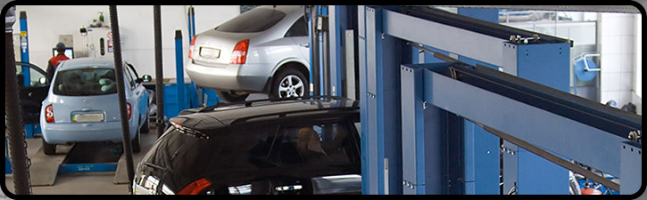

AUTOBEDRIJF VAN DER MARK · DE LIERAlles voor uw auto.
Alles voor uw auto.
Goed geregeld.
Voor onderhoud, APK, occasions en onderdelen. Eén vertrouwd adres in De Lier, met persoonlijk contact en een eigen werkplaats.

IN DE WERKPLAATSVakmanschap in beeld.
OCCASIONS
Alle demo-occasions bekijken ↗Een auto die bij u past.
Zo kan het toekomstige occasionaanbod overzichtelijk worden gepresenteerd.
 DEMO-OVERZICHT
DEMO-OVERZICHTVOORRAADPRESENTATIEOccasions overzichtelijk vergelijkenBekijk de zoekfilters en voorbeeldkaarten ↗

WERKPLAATSONDERHOUD & APKOok na aankoop goed geholpenOntdek onze werkzaamheden ↗
 PERSOONLIJK
PERSOONLIJKDIRECT CONTACTEen vraag over een auto of onderdeel?Neem rechtstreeks contact op ↗
Demonstratie: er worden geen actuele voorraad, prijzen of beschikbaarheid geclaimd.

OVER VAN DER MARK
Een autobedrijf met meerdere specialismen.
Onderhoud, occasions, onderdelen en autodemontage komen samen op één adres. Op deze website ontdekt u snel welke dienst u zoekt.
✓ Werkplaats en onderhoud✓ Occasions en onderdelen✓ Gevestigd in De Lier
Leer ons kennen ↗WIJ HELPEN U GRAAG
Waar kunnen we u mee helpen?
Een vraag over onderhoud, een onderdeel of een occasion? Neem direct contact op.